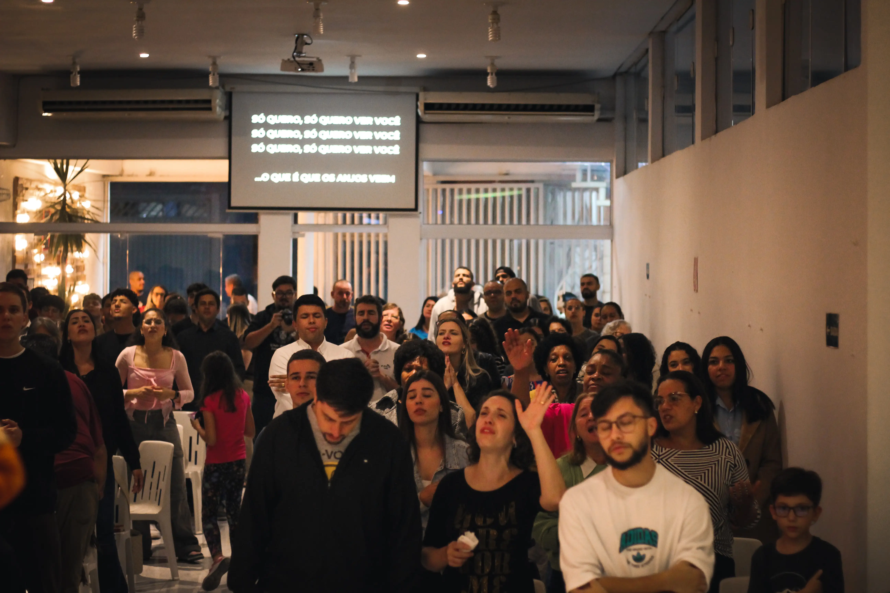
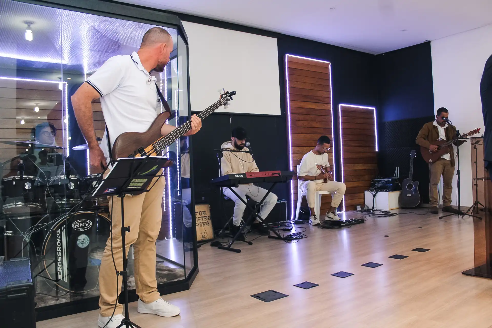
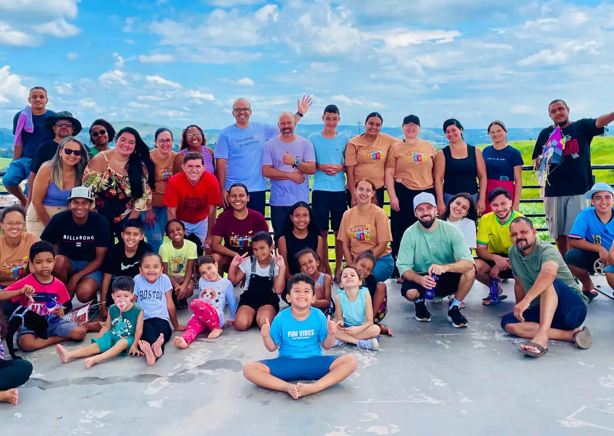
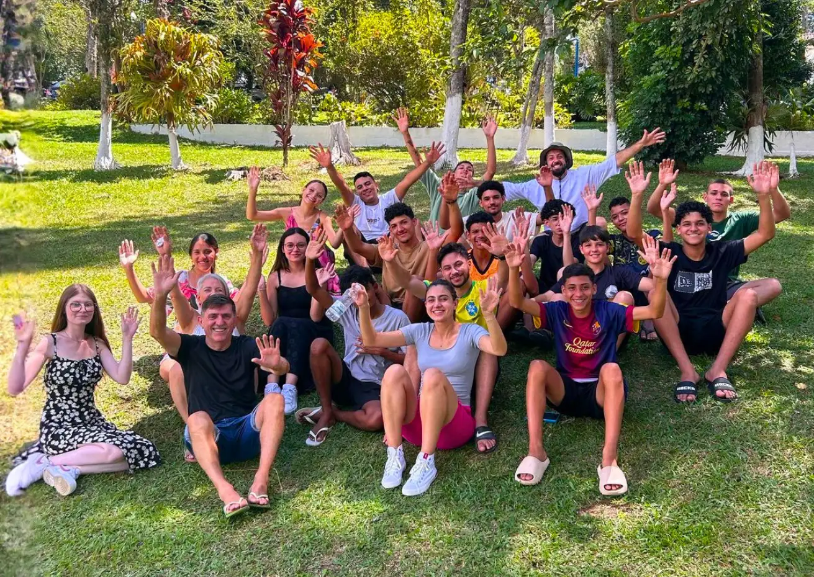
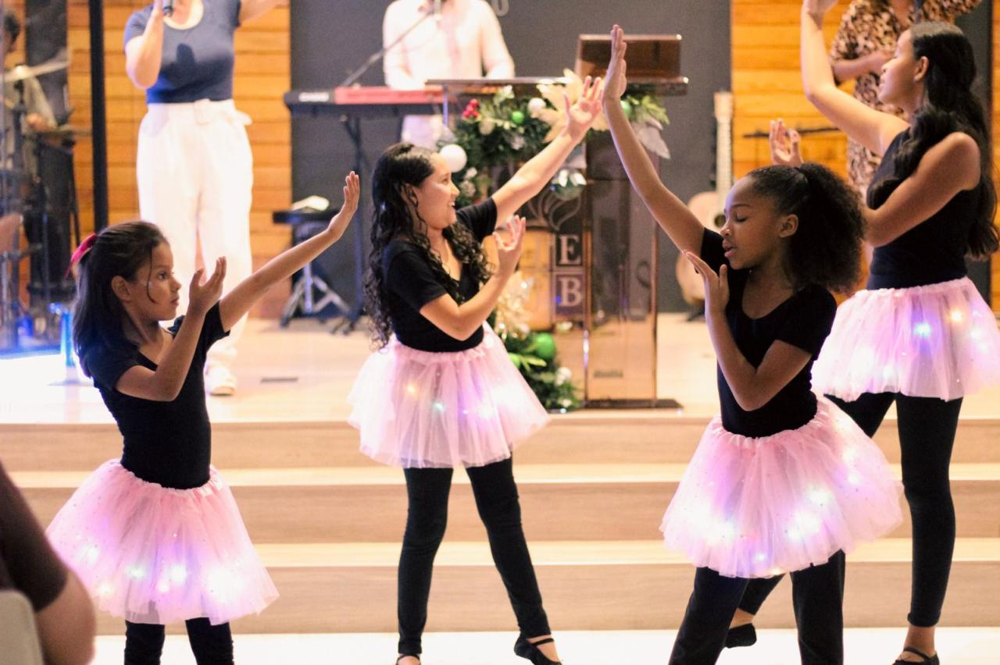

QUEM SOMOS
Uma comunidade evangélica que cresce junta em Araçariguama
A IEJB (Igreja Evangélica do Jardim Brasil) nasceu em 2013 em Araçariguama, SP, fundada pelo Pastor Luiz Roiz com uma visão clara: ser uma igreja família de verdade, não só no domingo. Aqui o princípio é o discipulado, vida na vida. Acreditamos que fé se vive junto, no dia a dia, nos relacionamentos reais. Por isso desde o começo nos preocupamos em ser um espaço acolhedor, onde todo mundo encontra seu lugar, seja dando os primeiros passos na fé ou querendo ir mais fundo.
-
Graça que transforma
Acreditamos que toda pessoa merece uma nova chance.
-
Comunidade real
Relacionamentos autênticos que vão além do domingo.
-
Palavra que fala
Ensinamentos práticos para o dia a dia.
PROGRAMAÇÃO DE CULTOS
Nossos cultos em Araçariguama
DOMINGO
EBD
09:00h
Aprendizado bíblico e comunhão durante as manhãs de domingo. Sua escola perfeita da palavra de Deus.
DOMINGO
Culto da Família
18:00h
Culto de adoração, adore a Deus com sua familia. Venha como você é!
TERÇA-FEIRA
Culto de Oração
19:30h
A adoração continua na semana, venha adorar a Jesus nas terças feiras conosco.
GALERIA
Nossa História em Imagens


MINISTÉRIOS
Nossa comunidade ativa

Louvor
Se você tem um dom musical, venha adorar conosco e usar seu talento para glorificar a Deus. O louvor é o coração da nossa comunidade.
Evangelismo
Participe de ações sociais e eventos evangelísticos para levar a mensagem de esperança a mais pessoas em Araçariguama.

Infantil
Ajude a formar a próxima geração, ensinando as crianças sobre o amor de Deus de maneira divertida e criativa.

Jovens e Adolescentes
Participe de atividades especiais para jovens, promovendo a comunhão e o crescimento espiritual em um ambiente acolhedor.

Ministério de Dança
Se você ama dançar, venha expressar seu amor por Deus. O ministério de dança é uma forma de adoração espontânea!
HISTÓRIAS REAIS
O que as pessoas dizem sobre a IEJB
"Para mim, a IEJB significa ser uma vida a oferecer, para o Propósito Divino"
— Miriam
"A IEJB é uma igreja acolhedora e familiar. Aprendemos a Palavra de Deus e encontramos apoio para crescer na fé."
— Alessandra
"A IEJB é mais que uma igreja para mim, é uma família de fé. Aqui cresço espiritualmente e fortaleço minha caminhada com Deus."
— Maria
AGENDA
Próximos eventos da IEJB
05
Junho
Sexta - Feira
CULTO NO LAR
Casa do Seu Valdir
Venha cultuar ao Senhor na casa do Seu Valdir! Participe dessa comunhão, com muito louvor, palavra, e edificação. Seja Igreja!
19h30
Rua José Fernandes 06, Bandeirantes...
Julho
Sábado
FÉRIAS NA IEJB
Escola Bíblica de Férias
Nessas férias, traga seu filho para a IEJB em Araçariguama. Ele será ensinado sobre a palavra de Deus, com brincadeiras, gincanas, música e muita alegria.
14h00
IEJB - Araçariguama13
JUNHO
Sábado
NAMORADOS
Dia dos Namorados
Participe do Dia dos Namorados na IEJB! Traga seu parceiro(a) e venha comemorar com muita risada, comida, e adoração ao Senhor.
19h00
IEJB - Araçariguama09
OUTUBRO
Sexta - Feira
ACAMPAMENTO CULTURA 24/7
Acampa de Jovens
Um tempo separado pra sair da rotina, fortalecer a fé e criar conexões de verdade. Nosso Acampa de Jovens vai ser um momento único de comunhão, palavra, louvor e muita troca entre a galera.
Horário a conversar
Espaço Liboredo - São Roque
Primeira vez em uma igreja evangélica?
É simples começar na IEJB
Sabemos que entrar em uma nova comunidade pode ser intimidador. Por isso
tornamos tudo muito tranquilo aqui em Araçariguama.
Faça parte da IEJB — a melhor Igreja
Evangélica de Araçariguama!
-
Venha como você é
Sem dress code, sem julgamento. Traje casual está mais do que ok.
-
Nos diga que é sua primeira vez
Vamos te acolher e mostrar tudo por aqui.
-
Fique um pouco mais
Após o culto, o pátio vira um espaço de conversa e conexão. É o melhor momento pra conhecer pessoas e se sentir em casa.
Tem dúvidas?
Entre em contato conosco pelo Instagram ou E-mail. Estamos aqui para ajudar!
Fale Conosco → Envie um E-mail →ONDE ESTAMOS
Venha nos visitar
ENDEREÇO
Rua Ceará, 128 — Jardim Brasil
Araçariguama — SP
Próximo ao Araçarizão
HORÁRIOS
Terças-feiras: 19:00h às 21:30h
Sábados e Domingos: 18:00h às 21:00h